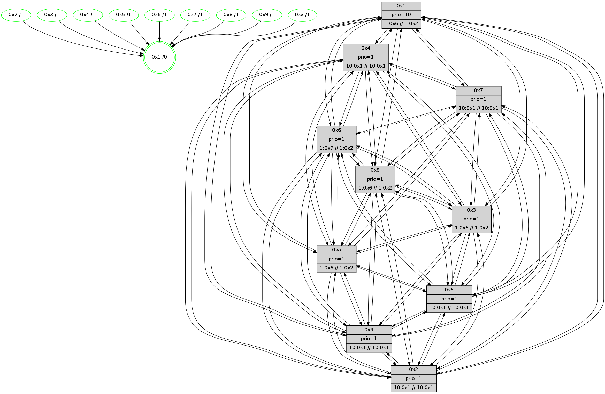

>> << IDX [start] -100 -25 -5 +0 +5 +25 +100 [575.006057978]
 Previous packets
----------------------------------------------------------------------
570.247291 beacon01(faad) #0 coord=01,02,03,04,05,06,07,0a,09,08 cycle=688.0ms assoc
-- color-indic=1 64 c6 19
570.257272 beacon02(faad) #0 coord=01,02,03,04,05,06,07,0a,09,08 cycle=688.0ms assoc 64 55 28
570.267273 beacon03(faad) #0 coord=01,02,03,04,05,06,07,0a,09,08 cycle=688.0ms assoc 64 2f 65
570.277272 beacon04(faad) #0 coord=01,02,03,04,05,06,07,0a,09,08 cycle=688.0ms assoc 64 58 8f
570.287273 beacon05(faad) #0 coord=01,02,03,04,05,06,07,0a,09,08 cycle=688.0ms assoc 64 22 c2
570.297273 beacon06(faad) #0 coord=01,02,03,04,05,06,07,0a,09,08 cycle=688.0ms assoc 64 ac 15
570.307275 beacon07(faad) #0 coord=01,02,03,04,05,06,07,0a,09,08 cycle=688.0ms assoc 64 d6 58
570.317279 beacon0a(faad) #0 coord=01,02,03,04,05,06,07,0a,09,08 cycle=688.0ms assoc 64 a7 53
570.327278 beacon09(faad) #0 coord=01,02,03,04,05,06,07,0a,09,08 cycle=688.0ms assoc 64 29 84
570.337279 beacon08(faad) #0 coord=01,02,03,04,05,06,07,0a,09,08 cycle=688.0ms assoc 64 53 c9
570.348821 [Hello(10): seq=299 sym=6,2,3,8,9,5,7,4,1 sysInfo= stat=6:8,0,11,3/2:7,4,3,0/3:7,5,2,1/8:8,10,11,3/9:6,11,9,3/5:13,12,8,5/7:5,11,10,2/4:9,13,8,6/1:12,9,4,0]
570.355354 [Hello(8): seq=310 sym=5,2,3,4,7,6,9,10,1 sysInfo=coloring-mode-on,ColoringModeIndicationCalled stat=5:1,10,10,5/2:5,5,1,0/3:9,6,8,6/4:14,13,13,5/7:1,8,12,4/6:8,4,11,4/9:1,11,12,4/10:15,14,8,5/1:12,13,6,0]
570.362953 [Hello(9): seq=310 sym=5,2,3,4,7,6,8,10,1 sysInfo=hasWarning stat=5:15,13,8,6/2:11,13,13,4/3:1,15,6,4/4:2,11,10,4/7:8,10,11,2/6:15,0,9,3/8:15,13,7,1/10:12,1,9,5/1:13,9,5,0]
570.373662 [Hello(5): seq=367 sym=7,6,4,3,1,9,8,10,2 sysInfo= stat=7:6,13,14,3/6:9,5,13,3/4:12,14,9,3/3:11,4,3,2/1:5,10,3,0/9:10,14,11,3/8:11,6,7,2/10:10,5,10,4/2:12,12,10,3]
----------------------------------------------------------------------
571.035422 beacon01(faad) #0 coord=01,02,03,04,05,06,07,0a,09,08 cycle=688.0ms assoc
-- color-indic=1 64 02 17
571.045405 beacon02(faad) #0 coord=01,02,03,04,05,06,07,0a,09,08 cycle=688.0ms assoc 64 91 26
571.055404 beacon03(faad) #0 coord=01,02,03,04,05,06,07,0a,09,08 cycle=688.0ms assoc 64 eb 6b
571.065406 beacon04(faad) #0 coord=01,02,03,04,05,06,07,0a,09,08 cycle=688.0ms assoc 64 9c 81
571.075404 beacon05(faad) #0 coord=01,02,03,04,05,06,07,0a,09,08 cycle=688.0ms assoc 64 e6 cc
571.085405 beacon06(faad) #0 coord=01,02,03,04,05,06,07,0a,09,08 cycle=688.0ms assoc 64 68 1b
571.095407 beacon07(faad) #0 coord=01,02,03,04,05,06,07,0a,09,08 cycle=688.0ms assoc 64 12 56
571.105411 beacon0a(faad) #0 coord=01,02,03,04,05,06,07,0a,09,08 cycle=688.0ms assoc 64 63 5d
571.115410 beacon09(faad) #0 coord=01,02,03,04,05,06,07,0a,09,08 cycle=688.0ms assoc 64 ed 8a
571.125411 beacon08(faad) #0 coord=01,02,03,04,05,06,07,0a,09,08 cycle=688.0ms assoc 64 97 c7
571.138578 [Hello(1): seq=276 sym=4,2,9,5,10,3,8,6,7 mpr= sysInfo=coloring-mode-on,ColoringModeRequestCalled stat=4:7,1,0,6/2:7,14,15,6/9:1,6,3,6/5:0,6,14,7/10:10,15,0,5/3:6,4,2,8/8:8,1,4,4/6:14,8,1,3/7:6,0,2,6]
571.141620 [Color(8) seq=47 @0:0 prio=1 >1.@6,1.@7,1.@9,1.@a >>1.@2,1.@3,1.@4]
571.145596 [Hello(7): seq=367 sym=2,3,5,4,8,9,10,1 sysInfo= stat=2:1,6,0,7/3:8,13,13,7/5:11,6,13,8/4:1,5,14,5/8:10,2,15,2/9:7,8,14,7/10:12,10,13,5/1:11,7,2,0]
571.148276 [Color(7) seq=35 @0:0 prio=1 >10.@1,1.@4,1.@6,1.@8]
571.152757 [Color(5) seq=31 @0:0 prio=1 >10.@1,1.@4,1.@6,1.@7 >>10.@1,1.@2,1.@3]
571.157521 [Hello(2): seq=364 sym=4,5,7,6,3,9,8,10,1 sysInfo=hasWarning stat=4:0,13,10,2/5:2,0,8,4/7:7,0,11,3/6:11,5,12,3/3:11,13,3,1/9:5,12,8,1/8:12,5,5,1/10:4,3,6,3/1:1,10,4,0]
571.161673 [Hello(6): seq=367 sym=2,3,5,4,7,9,8,10,1 sysInfo=coloring-mode-on,ColoringModeIndicationCalled stat=2:13,12,1,4/3:14,15,12,5/5:1,11,13,7/4:12,11,13,5/7:11,7,11,2/9:13,12,14,6/8:13,12,12,3/10:15,12,15,5/1:12,10,1,0]
571.165465 [Color(6) seq=47 @0:0 prio=1 >1.@7,1.@8,1.@9,1.@a >>1.@2,1.@3,1.@4]
----------------------------------------------------------------------
571.823554 beacon01(faad) #0 coord=01,02,03,04,05,06,07,0a,09,08 cycle=688.0ms assoc
-- color-indic=1 64 be 12
571.833535 beacon02(faad) #0 coord=01,02,03,04,05,06,07,0a,09,08 cycle=688.0ms assoc 64 2d 23
571.843535 beacon03(faad) #0 coord=01,02,03,04,05,06,07,0a,09,08 cycle=688.0ms assoc 64 57 6e
571.853537 beacon04(faad) #0 coord=01,02,03,04,05,06,07,0a,09,08 cycle=688.0ms assoc 64 20 84
571.873537 beacon06(faad) #0 coord=01,02,03,04,05,06,07,0a,09,08 cycle=688.0ms assoc 64 d4 1e
571.883537 beacon07(faad) #0 coord=01,02,03,04,05,06,07,0a,09,08 cycle=688.0ms assoc 64 ae 53
571.893541 beacon0a(faad) #0 coord=01,02,03,04,05,06,07,0a,09,08 cycle=688.0ms assoc 64 df 58
571.903543 beacon09(faad) #0 coord=01,02,03,04,05,06,07,0a,09,08 cycle=688.0ms assoc 64 51 8f
571.913542 beacon08(faad) #0 coord=01,02,03,04,05,06,07,0a,09,08 cycle=688.0ms assoc 64 2b c2
571.924767 [Hello(5): seq=368 sym=7,6,4,3,1,9,8,10,2 sysInfo= stat=7:6,13,14,3/6:10,6,13,3/4:12,14,9,3/3:11,4,3,2/1:6,10,3,0/9:10,14,11,3/8:11,6,7,2/10:10,5,10,4/2:13,12,10,3]
571.927452 [Hello(10): seq=300 sym=6,2,3,8,9,5,7,4,1 sysInfo= stat=6:9,1,11,3/2:8,4,3,0/3:8,5,2,1/8:9,10,11,3/9:7,11,9,3/5:14,13,8,5/7:6,12,10,2/4:9,13,8,6/1:13,9,4,0]
571.930810 [Color(2) seq=25 @0:0 prio=1 >10.@1,1.@4,1.@6,1.@7 >>10.@1,1.@2,1.@3]
571.933812 [Hello(3): seq=368 sym=1,7,6,2,4,8,9,10,5 sysInfo=coloring-mode-on,ColoringModeIndicationCalled stat=1:3,12,4,0/7:7,13,9,3/6:13,15,8,4/2:15,10,11,6/4:0,12,11,4/8:13,12,6,0/9:4,12,14,5/10:15,12,7,3/5:3,12,11,5]
571.937813 [Color(1) seq=48 @0:0 prio=10 >1.@6,1.@7,1.@8,1.@9 >>1.@2,1.@3,1.@4]
571.940858 [Hello(4): seq=368 sym=5,7,6,2,3,9,8,10,1 sysInfo= stat=5:6,1,9,6/7:9,15,11,2/6:15,5,12,4/2:3,13,10,5/3:8,14,2,2/9:5,1,8,3/8:14,12,13,4/10:3,4,10,4/1:2,10,7,0]
571.944056 [Hello(8): seq=311 sym=5,2,3,4,7,6,9,10,1 sysInfo=coloring-mode-on,ColoringModeIndicationCalled stat=5:2,11,10,5/2:6,5,1,0/3:9,6,8,6/4:14,13,13,5/7:2,9,12,4/6:9,5,11,4/9:2,11,12,4/10:15,14,8,5/1:13,13,6,0]
----------------------------------------------------------------------
572.611684 beacon01(faad) #0 coord=01,02,03,04,05,06,07,0a,09,08 cycle=688.0ms assoc
-- color-indic=1 64 6a 27
572.621666 beacon02(faad) #0 coord=01,02,03,04,05,06,07,0a,09,08 cycle=688.0ms assoc 64 f9 16
572.631668 beacon03(faad) #0 coord=01,02,03,04,05,06,07,0a,09,08 cycle=688.0ms assoc 64 83 5b
572.641667 beacon04(faad) #0 coord=01,02,03,04,05,06,07,0a,09,08 cycle=688.0ms assoc 64 f4 b1
572.651668 beacon05(faad) #0 coord=01,02,03,04,05,06,07,0a,09,08 cycle=688.0ms assoc 64 8e fc
572.661667 beacon06(faad) #0 coord=01,02,03,04,05,06,07,0a,09,08 cycle=688.0ms assoc 64 00 2b
572.671667 beacon07(faad) #0 coord=01,02,03,04,05,06,07,0a,09,08 cycle=688.0ms assoc 64 7a 66
572.681673 beacon0a(faad) #0 coord=01,02,03,04,05,06,07,0a,09,08 cycle=688.0ms assoc 64 0b 6d
572.691672 beacon09(faad) #0 coord=01,02,03,04,05,06,07,0a,09,08 cycle=688.0ms assoc 64 85 ba
572.701673 beacon08(faad) #0 coord=01,02,03,04,05,06,07,0a,09,08 cycle=688.0ms assoc 64 ff f7
572.714149 [Hello(1): seq=277 sym=4,2,9,5,10,3,8,6,7 sysInfo=coloring-mode-on,ColoringModeRequestCalled stat=4:8,1,0,6/2:8,14,15,6/9:1,6,3,6/5:1,7,14,7/10:10,0,0,5/3:6,4,2,8/8:9,2,4,4/6:15,9,1,3/7:7,1,2,6]
572.718787 [Hello(7): seq=368 sym=2,3,5,6,4,8,9,10,1 sysInfo= stat=2:2,7,0,7/3:9,13,13,7/5:12,7,13,8/6:0,1,0,0/4:2,5,14,5/8:11,2,15,2/9:7,8,14,7/10:13,10,13,5/1:12,8,2,0]
572.724314 [Color(7) seq=36 @0:0 prio=1 >10.@1,1.@4,1.@6,1.@8 >>10.@1,1.@2,1.@3]
572.726239 [Color(6) seq=48 @0:0 prio=1 >1.@7,1.@8,1.@9,1.@a >>1.@2,1.@3,1.@4]
572.728286 [Color(5) seq=32 @0:0 prio=1 >10.@1,1.@4,1.@6,1.@7 >>10.@1,1.@2,1.@3]
572.732123 [Color(10) seq=37 @0:0 prio=1 >1.@6,1.@7,1.@8,1.@9 >>1.@2,1.@3,1.@4]
572.734857 [Hello(2): seq=365 sym=4,5,7,6,3,9,8,10,1 sysInfo=hasWarning stat=4:1,13,10,2/5:3,0,8,4/7:7,0,11,3/6:12,6,12,3/3:12,13,3,1/9:5,12,8,1/8:13,5,5,1/10:4,3,6,3/1:1,11,4,0]
----------------------------------------------------------------------
573.399817 beacon01(faad) #0 coord=01,02,03,04,05,06,07,0a,09,08 cycle=688.0ms assoc
-- color-indic=1 64 d6 22
573.409798 beacon02(faad) #0 coord=01,02,03,04,05,06,07,0a,09,08 cycle=688.0ms assoc 64 45 13
573.419798 beacon03(faad) #0 coord=01,02,03,04,05,06,07,0a,09,08 cycle=688.0ms assoc 64 3f 5e
573.429799 beacon04(faad) #0 coord=01,02,03,04,05,06,07,0a,09,08 cycle=688.0ms assoc 64 48 b4
573.439799 beacon05(faad) #0 coord=01,02,03,04,05,06,07,0a,09,08 cycle=688.0ms assoc 64 32 f9
573.449800 beacon06(faad) #0 coord=01,02,03,04,05,06,07,0a,09,08 cycle=688.0ms assoc 64 bc 2e
573.459801 beacon07(faad) #0 coord=01,02,03,04,05,06,07,0a,09,08 cycle=688.0ms assoc 64 c6 63
573.469805 beacon0a(faad) #0 coord=01,02,03,04,05,06,07,0a,09,08 cycle=688.0ms assoc 64 b7 68
573.479805 beacon09(faad) #0 coord=01,02,03,04,05,06,07,0a,09,08 cycle=688.0ms assoc 64 39 bf
573.489806 beacon08(faad) #0 coord=01,02,03,04,05,06,07,0a,09,08 cycle=688.0ms assoc 64 43 f2
573.501295 [Hello(9): seq=312 sym=5,2,3,4,7,6,8,10,1 sysInfo=hasWarning stat=5:0,15,8,6/2:13,14,13,4/3:2,15,6,4/4:3,12,10,4/7:9,12,11,2/6:0,2,9,3/8:0,14,7,1/10:12,1,9,5/1:15,10,6,0]
573.504142 [STC(9)->1 #0.30 tree-change,inconsistent-stability,stable,to-color d=1]
573.508193 [Hello(8): seq=312 sym=5,2,3,4,7,6,9,10,1 sysInfo=coloring-mode-on,ColoringModeIndicationCalled stat=5:2,12,10,5/2:7,5,1,0/3:9,6,8,6/4:14,13,13,5/7:2,10,12,4/6:9,6,11,4/9:2,11,12,4/10:15,15,8,5/1:14,13,6,0]
573.511169 [Hello(4): seq=369 sym=5,7,6,2,3,9,8,10,1 sysInfo= stat=5:6,2,9,6/7:10,0,11,2/6:0,6,12,4/2:4,13,10,5/3:8,14,2,2/9:5,1,8,3/8:15,12,13,4/10:3,5,10,4/1:3,10,7,0]
573.514032 [Hello(3): seq=369 sym=1,7,6,2,4,8,9,10,5 sysInfo=coloring-mode-on,ColoringModeIndicationCalled stat=1:4,13,5,0/7:8,14,9,3/6:14,0,8,4/2:0,10,11,6/4:1,12,11,4/8:14,12,6,0/9:4,12,14,5/10:15,12,7,3/5:3,13,11,5]
573.516903 [Color(1) seq=49 @0:0 prio=10 >1.@6,1.@7,1.@8,1.@9 >>1.@2,1.@3,1.@4]
573.522103 [STC(3)->1 #0.30 tree-change,inconsistent-stability,stable,to-color d=1]
573.525929 [Hello(10): seq=301 sym=6,2,3,8,9,5,7,4,1 sysInfo= stat=6:9,1,11,3/2:9,5,3,0/3:9,5,2,1/8:10,10,11,3/9:7,11,9,3/5:14,13,8,5/7:6,12,10,2/4:10,13,8,6/1:14,10,4,0]
----------------------------------------------------------------------
574.187947 beacon01(faad) #0 coord=01,02,03,04,05,06,07,0a,09,08 cycle=688.0ms assoc
-- color-indic=1 64 12 2c
574.197930 beacon02(faad) #0 coord=01,02,03,04,05,06,07,0a,09,08 cycle=688.0ms assoc 64 81 1d
574.207929 beacon03(faad) #0 coord=01,02,03,04,05,06,07,0a,09,08 cycle=688.0ms assoc 64 fb 50
574.217929 beacon04(faad) #0 coord=01,02,03,04,05,06,07,0a,09,08 cycle=688.0ms assoc 64 8c ba
574.227929 beacon05(faad) #0 coord=01,02,03,04,05,06,07,0a,09,08 cycle=688.0ms assoc 64 f6 f7
574.237930 beacon06(faad) #0 coord=01,02,03,04,05,06,07,0a,09,08 cycle=688.0ms assoc 64 78 20
574.247932 beacon07(faad) #0 coord=01,02,03,04,05,06,07,0a,09,08 cycle=688.0ms assoc 64 02 6d
574.257935 beacon0a(faad) #0 coord=01,02,03,04,05,06,07,0a,09,08 cycle=688.0ms assoc 64 73 66
574.267934 beacon09(faad) #0 coord=01,02,03,04,05,06,07,0a,09,08 cycle=688.0ms assoc 64 fd b1
574.277936 beacon08(faad) #0 coord=01,02,03,04,05,06,07,0a,09,08 cycle=688.0ms assoc 64 87 fc
574.290481 [Hello(1): seq=278 sym=4,2,9,5,10,3,8,6,7 sysInfo=coloring-mode-on,ColoringModeRequestCalled stat=4:8,1,0,6/2:9,14,15,6/9:2,6,3,6/5:1,7,14,7/10:11,0,0,5/3:6,4,3,8/8:9,2,4,4/6:15,9,1,3/7:7,1,2,6]
574.293134 [Hello(2): seq=366 sym=4,5,7,6,3,9,8,10,1 sysInfo=hasWarning stat=4:2,13,10,2/5:3,0,8,4/7:7,0,11,3/6:12,6,12,3/3:13,13,4,1/9:6,12,8,1/8:14,5,5,1/10:5,3,6,3/1:1,12,4,0]
574.295568 [Color(8) seq=49 @0:0 prio=1 >1.@6,1.@7,1.@9,1.@a >>1.@2,1.@3,1.@4]
574.297952 [Color(3) seq=49 @0:0 prio=1 >1.@6,1.@7,1.@8,1.@9 >>1.@2,1.@3,1.@4]
574.300837 [Hello(6): seq=369 sym=2,3,5,4,9,8,10,1 asym=7 sysInfo=coloring-mode-on,ColoringModeIndicationCalled stat=2:14,14,1,4/3:0,15,13,5/5:2,12,13,7/4:14,11,13,5/9:14,12,15,6/8:15,12,12,3/10:1,13,15,5/1:14,12,1,0/7:11,7,11,2]
574.303707 [Color(4) seq=24 @0:0 prio=1 >10.@1,1.@2,1.@3,1.@5 >>10.@1,1.@4,1.@6]
574.305946 [Color(6) seq=49 @0:0 prio=1 >1.@7,1.@8,1.@9,1.@a >>1.@2,1.@3,1.@4]
574.308335 [Hello(7): seq=369 sym=2,3,5,6,4,8,9,10,1 sysInfo= stat=2:3,8,0,7/3:10,13,14,7/5:12,8,13,8/6:0,2,0,0/4:3,5,14,5/8:12,2,15,2/9:8,8,15,7/10:14,11,13,5/1:13,9,2,0]
574.311178 [Color(7) seq=37 @0:0 prio=1 >10.@1,1.@4,1.@6,1.@8 >>10.@1,1.@2,1.@3]
574.313438 [Color(5) seq=33 @0:0 prio=1 >10.@1,1.@4,1.@6,1.@7 >>10.@1,1.@2,1.@3]
574.315505 [Color(9) seq=33 @0:0 prio=1 >10.@1,1.@4,1.@6,1.@7 >>10.@1,1.@2,1.@3]
574.324607 [Color(10) seq=38 @0:0 prio=1 >1.@6,1.@7,1.@8,1.@9 >>1.@2,1.@3,1.@4]
----------------------------------------------------------------------
574.976076 beacon01(faad) #0 coord=01,02,03,04,05,06,07,0a,09,08 cycle=688.0ms assoc
-- color-indic=1 64 ae 29
574.986059 beacon02(faad) #0 coord=01,02,03,04,05,06,07,0a,09,08 cycle=688.0ms assoc 64 3d 18
574.996058 beacon03(faad) #0 coord=01,02,03,04,05,06,07,0a,09,08 cycle=688.0ms assoc 64 47 55